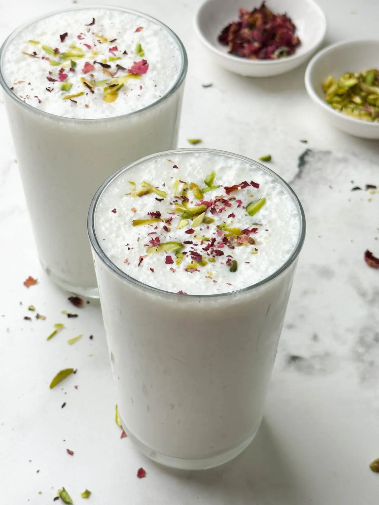

Lassi

Ingredients
- 2 cups curd
- 1 cup water
- 3 to 4 tablespoon sugar
- Half teaspoon cardamon powder
- 1 tablespoon chopped nuts
Preparation
- Add 2 cups chiled cured to a deep bowl or a blender/li>
- Whisk it well until smooth
- Next add 3 to 4 tablespoon sugar
- Add Half teaspoon cardamon powder
- Whisk everything well sugar dissolves
- Garnish with tablespoon chopped nuts
- Serve it chiled
Return to main page